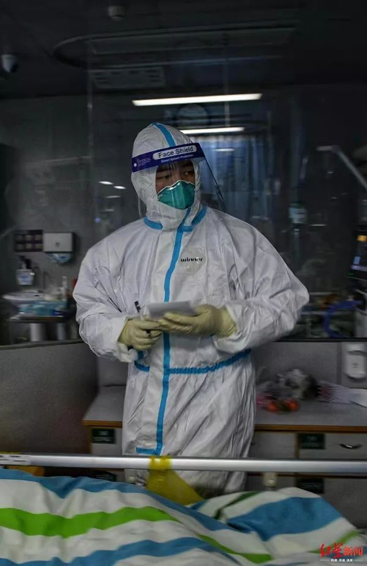
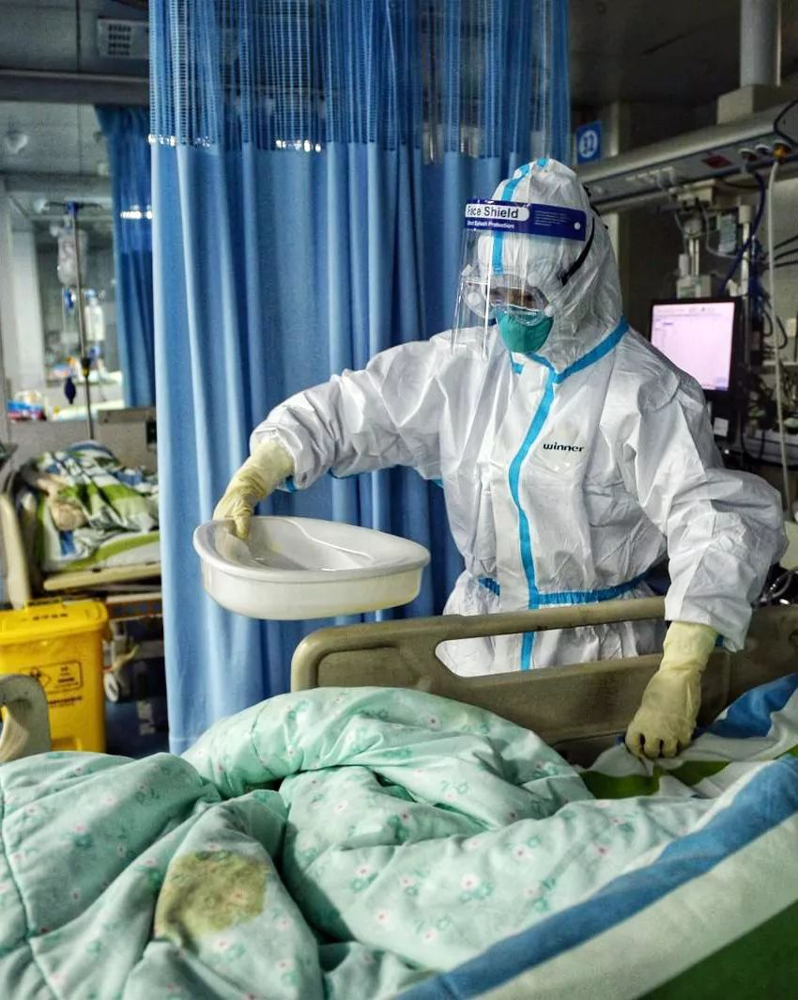

新冠特刊 | 2020年初，我们在武汉现场
原文链接 备份链接 点击上图，一键下单** 【武汉现场：抗击新冠肺炎】** 记者 | 吴琪 我从没见过这样的汉口火车站。 1月23日，大年二十九。上午8点40分、50分，墙上的时钟往前走，随着一拨拨人上车，庞大的候车大厅，像被一支巨大的 …
澎湃新闻记者 黄霁洁 实习生 陈媛媛
2月7日凌晨2点58分，武汉市中心医院眼科医生李文亮因感染新冠肺炎离世。
李文亮的离世触动了众多关切，为何原本病情平稳或好转的新冠肺炎患者，却在短期突然恶化？
李文亮于1月10日出现咳嗽症状，12日住院。治疗近一个月后的2月3日，他曾在大学群里发言，说自己早上血气好些了，氧分压100，还是不能动，一动就喘，其他还好，估计两周后出院。
一度好转，5日，他的病情却骤然直下。6日，在武汉市中心医院后湖院区，重症医生采用ECMO（体外膜氧合肺，俗称人工肺）为李文亮进行支持，但最终未能抢救回来。
这一现象并非孤例。1月29日，一项针对金银潭医院1月1日至1月20日的所有新冠肺炎确诊病例的研究发表于医学杂志《柳叶刀》。研究显示，99个病例中，17名患者出现急性呼吸窘迫综合征，其中，11例患者病情在短时间内恶化，死于多器官衰竭。

1月24日，在武汉大学中南医院重症隔离病房，医护人员为病人治疗。新华社 图
2月7日，另一项武汉大学中南医院在医学杂志《JAMA》发表的针对138个住院病例的回顾性研究显示，新冠肺炎从最初出现症状到呼吸困难需要的中位时间为5天，到住院需7天，到急性呼吸窘迫综合征需8天。
对此，一些专家提出“炎症风暴”的解释，也称细胞因子风暴，意指某些病毒感染或当机体免疫功能异常时，促炎性细胞因子持续大量产生，不断活化更多的免疫细胞聚集到炎症部位，过多的免疫细胞及多种促炎细胞因子引起组织充血、水肿、发热、损伤，还可能引起其它继发性感染甚至导致“全身炎症反应综合征”，最终患者因多器官衰竭而死亡。
澎湃新闻查询发现，“炎症风暴”并非一个新的概念，一篇2015年发表在《生命科学》上的论文《细胞因子风暴：急性呼吸窘迫综合征中的主宰生命之手》指出，多种病毒感染，如SARS冠状病毒、2009 甲型H1N1流感病毒、禽流感病毒，以及某些纳米材料，均可导致细胞因子风暴，进而引起ARDS（急性呼吸窘迫综合征），而ARDS的病死率达40%-70%。
2月9日，澎湃新闻对话在武汉金银潭医院支援的上海中山医院重症医学科副主任钟鸣、武汉大学中南医院呼吸与危重症医学科主任程真顺、黄冈市中心医院呼吸内科副主任黄虎翔，试图进一步揭示“炎症风暴”。
上述医师们表示，目前关于新冠肺炎中“炎症风暴”的机理及为何病程突变仍不清晰，但大多数死亡的患者中曾出现这一类似反应。

_
【对话】
澎湃新闻：在治疗新冠肺炎患者时，你遇到过病人病情快速恶化的情况吗？
钟鸣：有，之前相对稳定，很快病情加速，演变成多器官功能衰竭，许多死亡的病人经常会经历这样一个过程。如果是面对这样的重症病人，我们之前的许多治疗经验都可能派不上用场，我相信很多医生都可能遇到了这样的情况。
黄虎翔：是有2-3天病人突然恶化的情况，要不就是病毒潜伏在体内没有完全清除，因为病毒生长、繁殖速度非常快，可能一下子又爆发了。我们也碰到病人明明核酸检测转阴之后，复查变成阳性了，说明没清除干净。也有在恢复期或隔离期，本来（病情）没什么，突然一下子加重的。
但这样的病人还是少数，只是在住院时病人病情会有反复。虽然任何疾病都会，但新冠病毒来得更凶险、更快。
澎湃新闻：有学者提出，这与一种称为“炎症风暴”的现象有关，你怎么看？
钟鸣：在这些天的临床一线工作中，我发现有类似炎症风暴的现象，跟我在过去治疗其他疾病中遇到的炎症风暴的表现很像，但是现在还没有足够证据来证明具体的机制。目前的工作环境没法让我像以前那样去实验室做检查来证实我的想法，还是一种对以往经验的总结和猜测。多数危重病人在最初发病后10天到2周，会出现这种临床表现。
程真顺：所谓的炎症风暴，在包含病毒性肺炎在内很多肺炎过程中都可能会发生。炎症风暴是指，病原菌在破坏我们的肺组织的时候，同时诱发我们体内的免疫反应，体内就会产生大量的炎性介质或细胞因子，本来的目的是想去对抗病原菌，但是这些炎性介质或细胞因子却可能会造成肺组织以及其他器官的损伤。对于有些病人，会导致弥漫性的肺的破坏，从而造成ARDS（急性呼吸窘迫综合征），呼吸衰竭，就有生命危险。
黄虎翔：早期比较平稳、后期凶险，是和炎症风暴有关，也叫细胞因子风暴，就是指任何一种感染（细菌、病毒、真菌等）会导致体内的炎症反应，如果炎症反应过强，会对其他正常组织产生损害，也会导致白肺。最后造成全身炎症反应综合征，进一步可能导致多器官功能衰竭，最后脓毒症、休克，这是我们最害怕的。一般，病情加重会出现在第7-10天，如果疾病的进展2周之内没有危及到生命，痊愈的可能性还是比较大。在我们收治的患者中，重症和危重症的比例为20%。

澎湃新闻：在你的临床观察中，什么样的病人会出现这样的现象？
钟鸣：我们接触的病人中，经历这种快速恶化的病人多数是年龄大的、有合并症的，尤其是高血压。
程真顺：炎症风暴和免疫反应有一定关系。理论上，免疫反应越强，越容易发生炎症风暴。我自己接触的病例中有一个年纪较轻的患者，开始症状不明显，仅有轻微呼吸困难，在10天后，突然就出现呼吸窘迫，CT影上出现白肺。这个病例比较幸运，我们用了激素来抑制炎性介质风暴和有效无创呼吸机支持治疗，3天后病人的情况就稳定了，现在呼吸平稳，脱去了呼吸机。
黄虎翔：一般是有基础疾病的，都是老年人。年轻人有，但很少见，出现这样情况大部分也能扛。
澎湃新闻：炎症风暴会出现在轻症病人身上吗？
钟鸣：从轻症到重症，重症再到危重，都有可能快速发展。
程真顺：炎症风暴是导致呼吸衰竭，病情加重的主要原因，因此，临床上多见于重症患者。
黄虎翔：很少，除非有的轻症病人肺部影像学显示病变很大，也会产生这样的炎症风暴。
澎湃新闻：对于启动炎症风暴的病人，会采取什么样的治疗？
钟鸣：目前工作中碰到的最大的困难就是我们还不知道为什么会出现刚才提到的病情突然恶化，因此也没有太好的针对性治疗，只能给予非特异性的生命和器官支持治疗。支持手段对一些病人有效，但是真正到那个阶段，即使用最强的支持手段，比如ECMO（俗称人工肺）、血液净化，这些过去对很多疾病都会有效的支持治疗方法，在这些病人身上效果都不一定好。
程真顺：所有肺损伤的病人，肺部必然有炎性介质反应，我们的身体会自我修复、平衡;如果炎症风暴造成器官损害非常严重，或有这个趋势，在临床上比较多用抑制炎性介质反应的药物如激素，减少对器官进一步的炎性介质打击，同时还需要器官功能支持治疗，如呼吸支持。
黄虎翔：抗病毒没有特效药，主要是对症治疗，还有药物，营养支持等，帮病人渡过这个阶段，说不定就好了。往往有些病人开始出现轻度缺氧或者较轻的呼吸衰竭，我们要及早启动呼吸支持，最常见的就是采用无创呼吸机和经鼻高流量给氧，这样就不会转变成很严重的呼吸衰竭，痊愈的几率就会增加。
澎湃新闻：发生炎症风暴的病人，死亡率是多少？
钟鸣：进入这种阶段的危重病人死亡率，我并没有具体的统计数据。这个需要在一个整体发病的基数上计算才有意义。同时，对这一现象是否存在，或者是另有其他机制导致的这种临床表现还不清楚，所以无法明确定义这个现象，因此无法完成死亡率统计。
程真顺：炎症风暴不是死亡的唯一原因，但确实很多炎症风暴导致ARDS（急性呼吸窘迫综合征），是病情恶化并死亡的主要原因。
戳这里进入
“全国新型冠状病毒感染病例实时地图”↓↓↓

本期编辑 周玉华
推荐阅读


原文链接 备份链接 点击上图，一键下单** 【武汉现场：抗击新冠肺炎】** 记者 | 吴琪 我从没见过这样的汉口火车站。 1月23日，大年二十九。上午8点40分、50分，墙上的时钟往前走，随着一拨拨人上车，庞大的候车大厅，像被一支巨大的 …
原文链接 备份链接 编者按：上海市第一人民医院呼吸科的谢国钢医生，2月1日报名了支援上海公共卫生临床中心医疗队。清晨5点，值班的他接到了报到的电话通知，连家都来不及回，就匆匆奔赴了“战场”。要知道，谢国钢医生12月份才刚刚结束为期半年的援 …
原文链接 备份链接 “彭主任，急诊室一个31岁的新冠肺炎病人心脏骤停了，您快来看看，要不要转入ICU。” 2月4日晚上7点半，武汉大学中南医院重症医学科（ICU）主任彭志勇刚从湖北天门考察疫情回到办公室，和财新记者聊了不到十分钟，就 …
原文链接 备份链接 医学史 记录你的行医故事 按 本文根据武汉某三甲医院呼吸内科住院医师牛牛妈口述整理。牛牛妈所在的医院虽然不是新冠病毒肺炎的定点收治医院，但从去年年底至今，呼吸内科从最初大的一个病区扩展到四个病区，一直超载运行。有的人是 …
原文链接 备份链接 【财新网】（记者 萧辉）此次新冠肺炎疫情，在一线抢救的医生们冒了极大风险又最了解现实情况。财新记者2月4日采访身在前线的武汉大学中南医院重症医学科主任彭志勇。他向记者介绍了最初发现疫情的亲身经历和判断、对患者发病周期 …